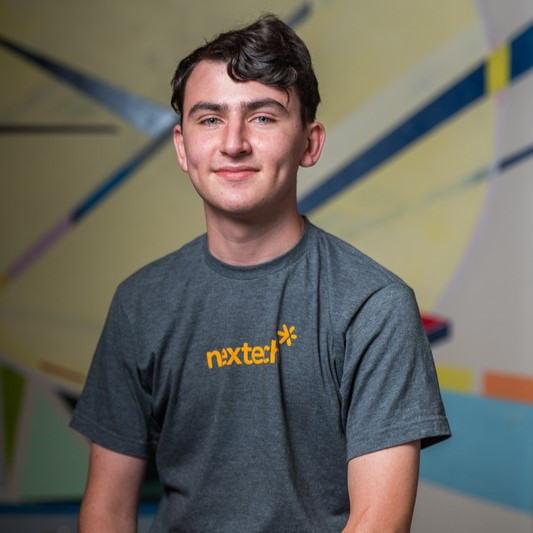
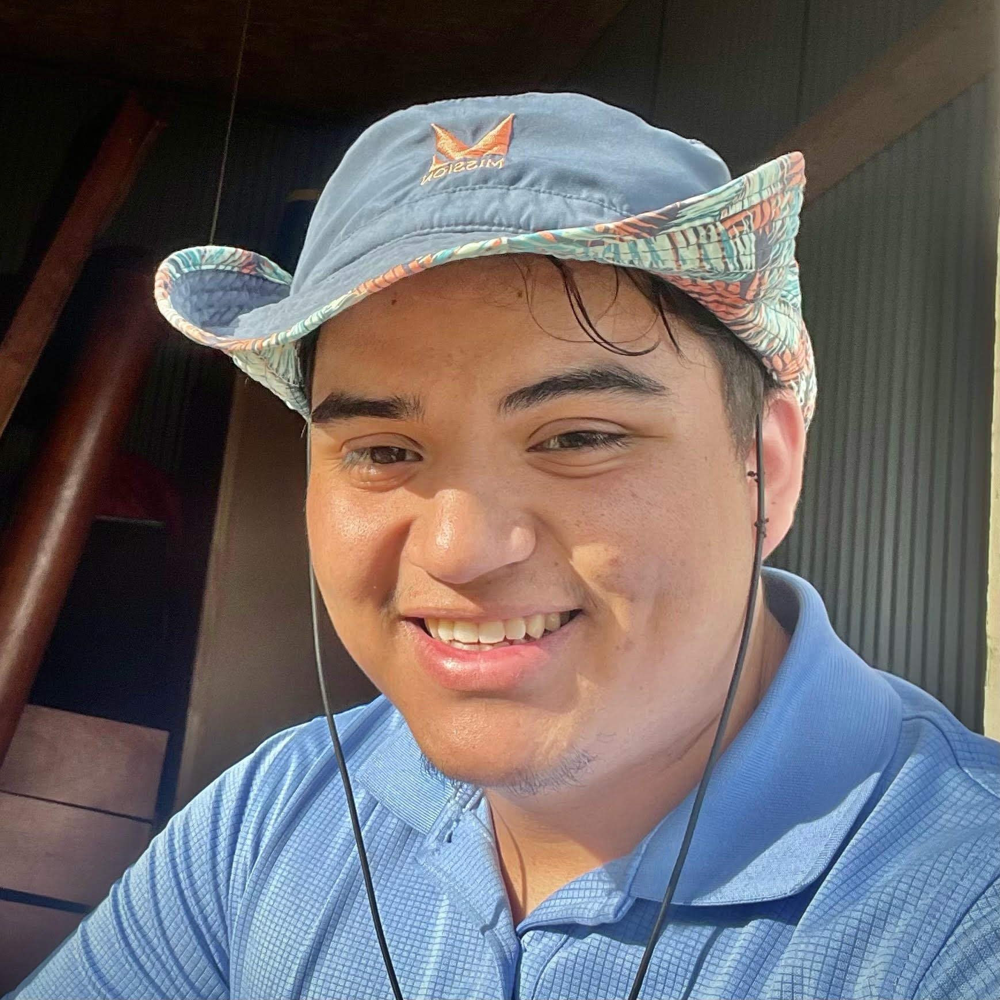

-
Sam Higgins
Growing up, Sam has always been fascinated by cars. Their inner workings, the creation process, and racing, a large passion of his, are enticing and interesting to get to understand. By analyzing the CAFE dataset, he hopes that manufacturers and lawmakers can understand the importance of regulation and it's impact on the industry. He believes internal-combustion engines remain the future, but biofuel, energy systems, and regulations are critical steps to get there.
-
Jay Annadurai

Jay wants to apply the scientific analysis and research skills he has learned through his four years at the Purdue School of Science in his future informatics work. The analysis of the CAFE dataset is a platform for Jay to demonstrate the multidisciplinary analytical skills he has been honing over his adult life. Lastly it also serves as a passion project while he observes the last hurrah of internal-combusion-engine-based vehicles as the general public tranisitions to electric consumer vehicles.
-
Noriel Arana
My name is Noriel Arana and I am pursuing a degree in Healthcare Engineering Technology Management or HETM for short. I am in the third year and on my way to completing my degree which would allow me to work on hospital equipment such as heart monitors and ventilators as well as many more devices. This project is very dear to me because I love gas powered cars from a performance side and see how we are changing as a society from gas to electric.
-
Ollie Heady

My name is Ollie Headdy and I am going in for a Media Arts and Science degree or MAS for short. I am originally from Bloomington, IN. I work for the UITS at IUPUI and I also have an interest in cars. I have always been interested in cars and so has my family. My sister is actually going to school to become a mechanic. I feel as if this project can not only widen my view on vehicles but also give me something to teach my friends and family about.